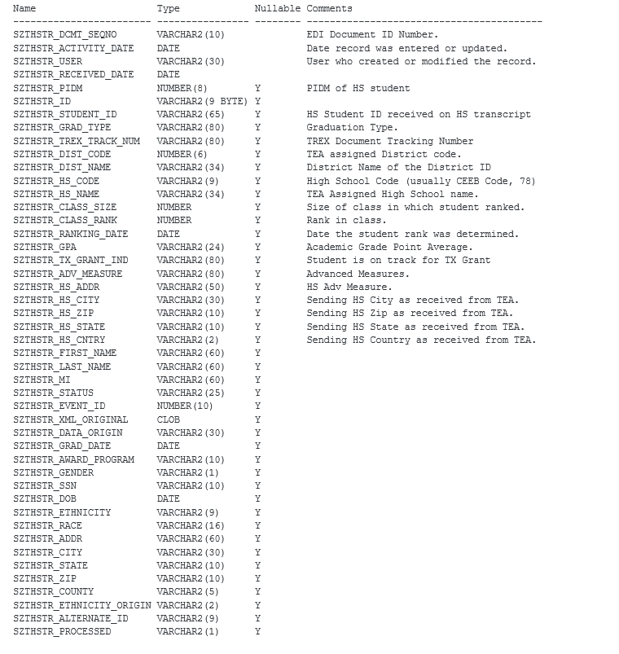
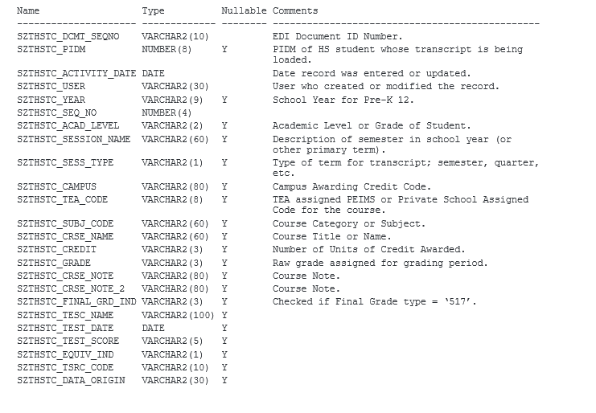
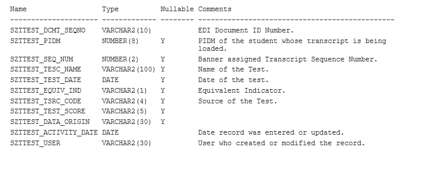

HS Transcript Upload Process
Troubleshooting
Troubleshoot data processing issues
During routine operation the user may encounter data processing issues that were caused by factors such as file error, middleware or TCC Student.
Follow the recommended procedures below to determine the cause of the error and suggested steps for resolution. These instructions encompass processing from the time the file is received from the UT Speede server until the transcript is stored in the TCC Student temporary tables.
| Module | Functionality | Verification or Notification | Recommended Resolution Steps |
|---|---|---|---|
| UT-Speede Server | |||
| Receive HS transcript file in institutionally defined folder. |
Verify incoming transcript file is received and is in EDI format. The incoming transcript file is required for further processing. Absence of the file will cause processing to stop. |
Contact UT at Austin, TREx project. Verify receiving folder. Proceed to next step. |
|
| EDI.Smart | |||
| Transcript conversion and transfer to TCC Student processing folder.
|
Verify incoming transcript file is in the designated folder for EDI Smart processing. This may be verified by utilization of the EDI.Smart Transaction Log (click on the Transaction Log link on the EDI.Smart front page) Absence of the file in EDI.Smart designated folder will cause processing to stop. |
Verify steps above are working correctly. Verify EDI Smart is configured to process files in the designated folder. See the TCC delivered EDI.Smart documentation included in the TCC install package (TTCC_S_8.x_20130331_EDISmart_P_5197.zip) Verify EDI.Smart places file in the designated out-going folder. Proceed to next step. |
|
| TCC Student | |||
| Transcript data created in the TCC Student Temporary Tables using the SZREHSL process and viewable through SZAEHTA. | No records are viewable using SZAEHTA or transcripts records are not viewable through SZAEHTA. | Verify steps above are working correctly. Review the SZREHSL LIS file. Review the number of transcripts received, loaded and failed. The transcripts failed should NOT be viewable on SZAEHTA. Note: Note: Some transcripts may have an informational or error message in the LIS file but are still viewable for pushing to the permanent TCC Student tables using SZAEHTA.
|
|
Additional notes
In case of messages or errors, review the above table and perform steps to diagnose or resolve the problem. If additional assistance is needed contact the Ellucian Customer Support Center and submit a Service Request.
Before submitting an SR the following checklist should be completed:
- Verify all TREx related patches and releases are installed. Following are helpful tips:
- Register for the TCC Student Commons as all patches and releases are announced in that community.
- Check the Student Product Release Matrix for a listing and compare to the releases at your institution.
- Obtain a list of TCC software installed at your institution using either GZITCCV or GZRTCCV.
- Obtain a list of TCC software available by going to the TCC Student Commons and click on the following links:
- Find It Fast → Product Release Matrix for Student
- Product Release Matrix
- Click Open
- Click the tab titled TCC_BannerStudent. Included is a list of all software patches and RTEs.
- Compare the list of TCC software installed at your institution to the list of TCC software available.
- Errors appear on both the SZAEHTA Review Results tab and on the GZIERRS form. A purge of the transcript in the temporary tables using either the Electronic HS Transcript Activity page (SZAHETA) or the Electronic HS Transcript Purge process (SZREHPG) will remove the messages from viewing on GZIERRS.
- If errors are found in the LOG file indicating a date format that is not valid (ORA-01480: trailing null missing from STR bind value) the issue may be with the format of the transcript file. If the post EDI.Smart file is transferred to a Linux machine the format of the file may need to be modified to ensure it is in UNIX format. A command such as
dos2unixcan be used to convert the file to UNIX format. - File Format - The file must be in ASCII format with no Carriage Returns (CR) at the end of each record. The format required may be referred to as UNIX line endings or UNIX (LF).
Troubleshoot data load to TCC Student temporary tables
Troubleshoot data load to TCC Student permanent tables
Database Tables for Incoming HS Transcripts
Temporary Table – High School Transcript (SZTHSTR)
Following is a listing of fields in the Oracle table that stores the data specific to a High School student. The data is in TCC Student format and may copy to TCC Student permanent tables.

Temporary Table – High School Courses (SZTHSTC)
Following is a listing of fields in the Oracle table that stores the data specific to a High School courses for a student. The data is in TCC Student format and may copy to TCC Student permanent tables.

Temporary Table – Test Scores (SZTTEST)
Following is a listing of fields in the Oracle table that stores the data specific to a test scores for a High School student. The data is in TCC Student format and may copy to TCC Student permanent tables.
